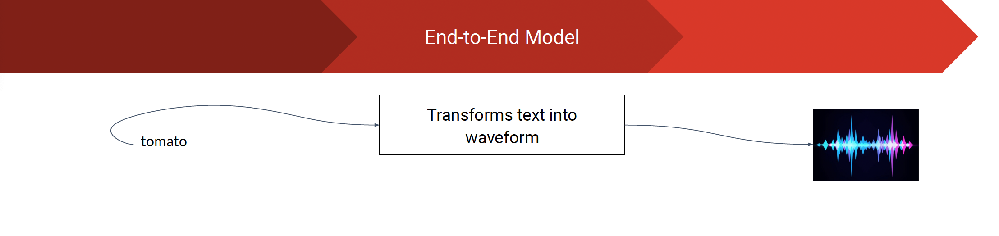
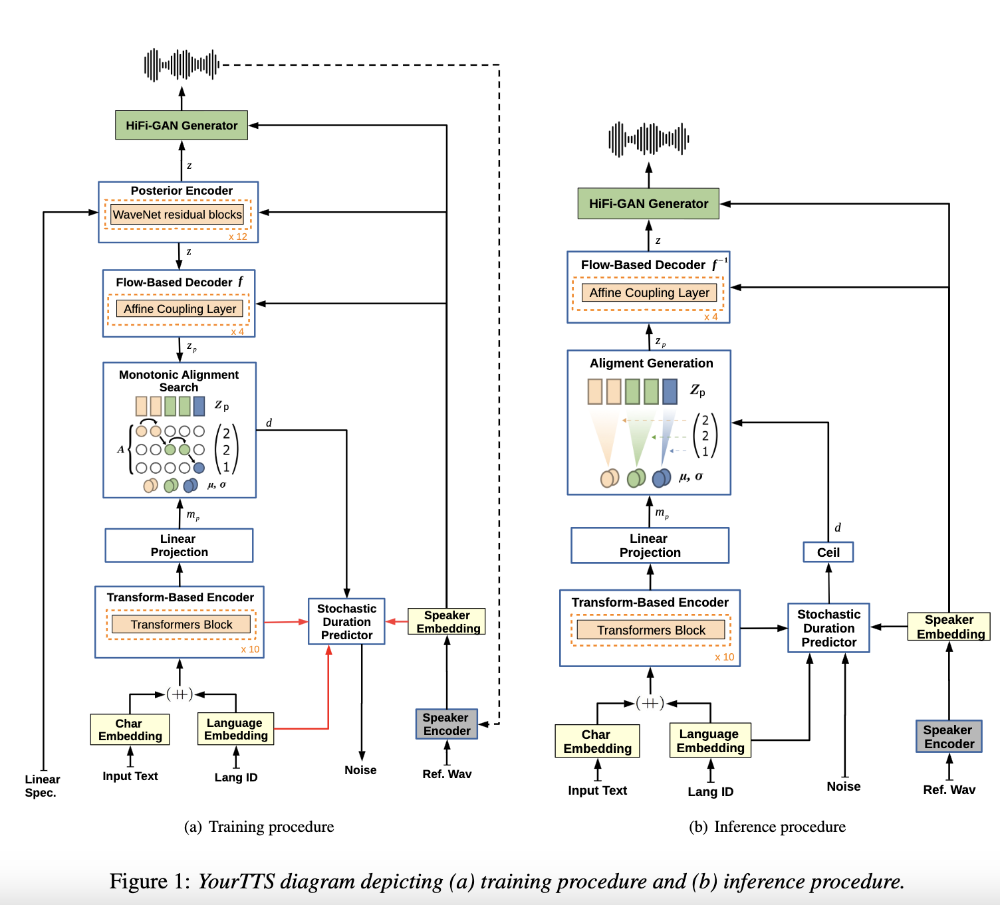

Zero-Shot TTS #

The next leap made for the generation of deepfaked audios is zero-shot TTSes. Zero-shot text-to-speech (TTS) refers to the capability of a system to generate speech in a target voice without any specific training on that particular voice. In a traditional TTS system, training involves using a large dataset of recordings from a specific speaker to learn the characteristics of that speaker’s voice. In contrast, zero-shot TTS aims to generate speech in a new, unseen voice without requiring explicit training on that voice.
YourTTS #
YourTTS has been shown to achieve state-of-the-art results on the VCTK dataset, and it is a promising new approach to zero-shot multi-speaker TTS. Find the paper here.

XTTS #
XTTS is a cross-lingual text-to-speech synthesis and speech-to-speech translation model that is based on VALL-E. It uses a number of modifications to VALL-E, including a multilingual transformer encoder, a cross-lingual attention mechanism, and a multilingual audio codec model. XTTS has been shown to achieve state-of-the-art results on the Multilingual VCTK dataset and has the potential to be used for a variety of applications.